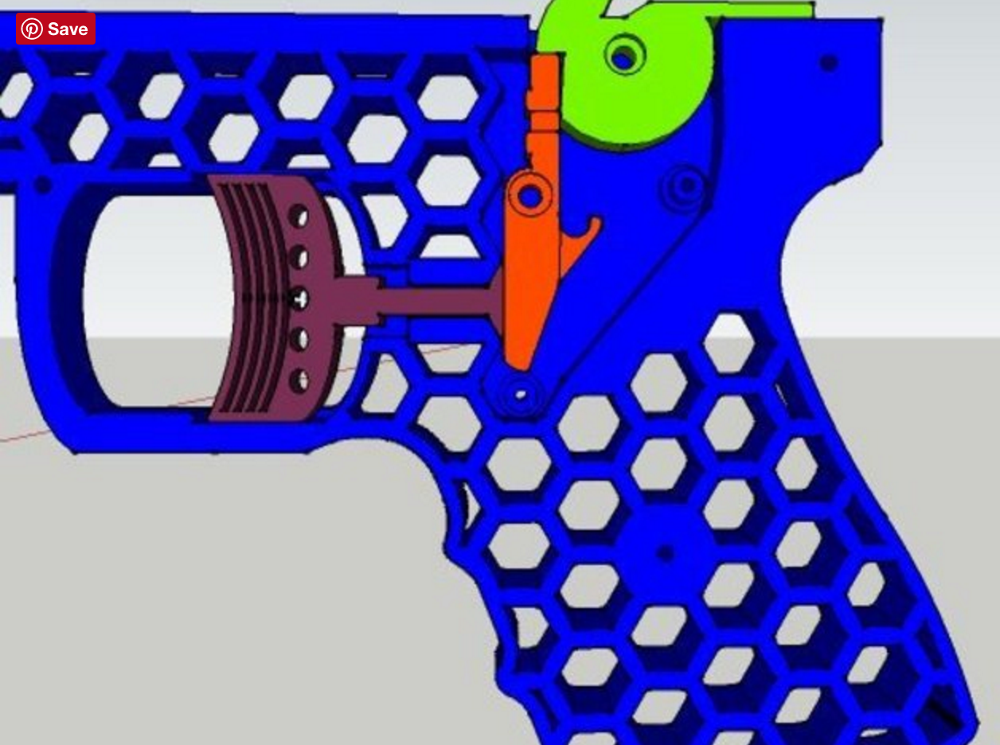
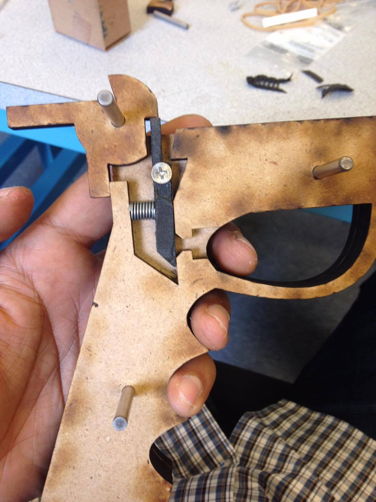
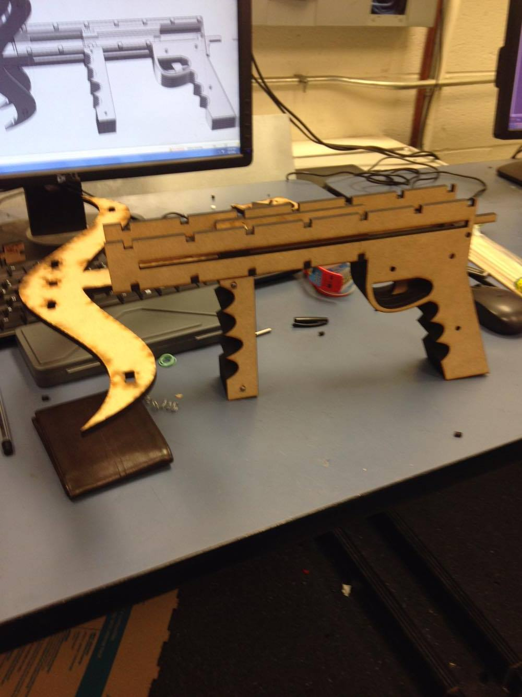
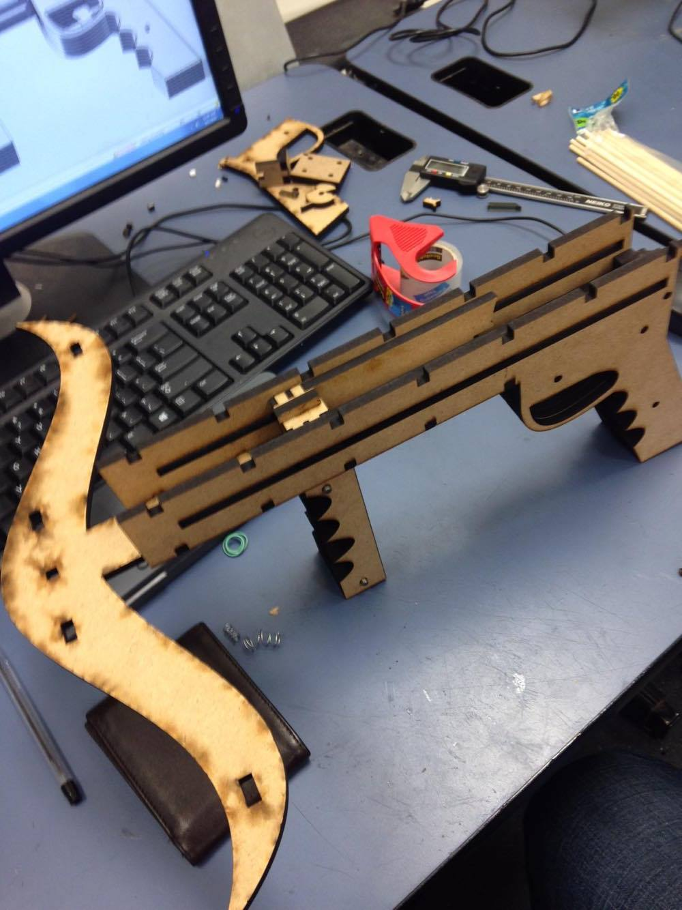

Crossbow
MEAM 101 Assignment

My teammate Nitin testing the crossbow before our final presentation.
Assignment
The assignment called for the making of a toy or game of a certain level of complexity, including some moving parts. Beyond this, we needed to document the build process and could use any of the manufacturing methods we had been taught. After submitting a few proposals and having them be dismissed, we settled on a crossbow.
Design Process
The project group included Nitin (seen shooting the crossbow above), Josh, and myself. I originally proposed the crossbow idea and had noted that I had already mapped out some of the basic design. We agreed that Josh and Nitin would focus on the final assembly while I would precad the basic design(All but the interference fits) to make sure we would hit no snags.

Here is my initial rendering of the cossbow without the interference fits or barrel.
Design Process Cont.
The hardest part of this project we understood would be the launching mechanism. Luckily, I had already found a representation of a working trigger form a project on thingiverse. I copied this design (below) and it worked handily with a slight alteration done by Josh and Nitin.

The second most difficult part we had to figure out was the "shelling" and interference fit of the device. Because we decided on making the model press fit for easy manufacture-the queue for the 3D printers near the project deadlines was often impossibly long- we needed to design our three dimensional structure considering the thickness of our sheet material. With MDF and acrylic available, we chose MDF as it was less prone to cracking under pressure. The MDF available came in 1/8" and 1/4" thicknesses, and considering our "shelling" required a minimum of 5 layers sheets, we opted for a crossbow with the rigidity of five 1/4" layers over five 1/8" layers.
Making the interference fits work is always a tricky game. Because the fit is dependent on the level of kerf cut away from the laser which itself is variable, it always requires some level of testing. Luckily I had wonderful teammates who made everything parametric, who were easily able to change the dimensions of the model to fit together.
The Trigger Mechanism and Handle
Not pictured: The trigger itself

A side view without the top. One can see how we opted for an internal barrel.

A top view of thethe "carriage" which cocks the band. The carriage has pieces that lock into rails on each side of the barrel.
Overall Review
While the first mockup(gif) I created did not reflect my full design, the crossbow worked fairly well. The crossbow fired with a solid speed, I'd guess ~50mph about as straight as I would imagine. We used 1/8" foot long dowel rods to fire which had no stabilization(for the safety of all), leading them to spiral once about 15ft from the gun.
Some aspects that I wish we had incorporated included adding a more definite barrel. While not pictured, the "barrel" was more of a resting spot for the projectile. This method I felt could have benefitted in two wasy from the more definite barrel. The first is that we often had misfirings of the gun from the elastic band tracking past the end of the dowel, leaving it in the barrel with a dry fire. Having a more defined barrel i believe would have minimized the chances of this happening. The other improvement this may be able to do is direct the dowel in a more straight path. I believe similarly to how the band could slip off that the band often would propel the dowel in a non-uniform manner. Having this barrel I believe could have kept the path of the projectile more consistent.
One last bit I would improve is the handle of the gun. After testing many rounds, we got excited with the product and cocked it too hard, breaking off the handle. This could have been prevented by making the piece that interlocks with the handle and carriage a little more robust. I also think this makes sense considering that we were using this product as a toy and often toys get mistreated and beaten up, requiring the design to handle these rigors.